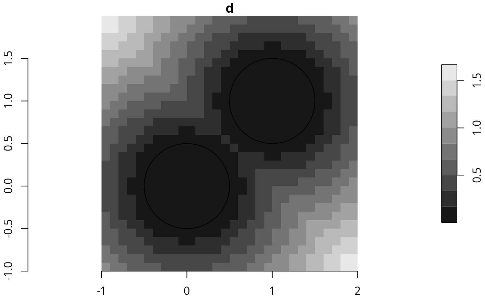

Given a stars raster and an sf vector layer, returns a new raster with the distances of each cell centroid to the nearest feature in the vector layer.
Examples
# Sample 'sf' layer
x = st_point(c(0,0))
y = st_point(c(1,1))
x = st_sfc(x, y)
x = st_sf(x)
x = st_buffer(x, 0.5)
# Make grid
r = make_grid(x, res = 0.1, buffer = 0.5)
d = dist_to_nearest(r, x, progress = FALSE)
#> lines or polygons
# Plot
plot(d, breaks = "equal", axes = TRUE, reset = FALSE)
plot(st_geometry(x), add = TRUE, pch = 4, cex = 3)
